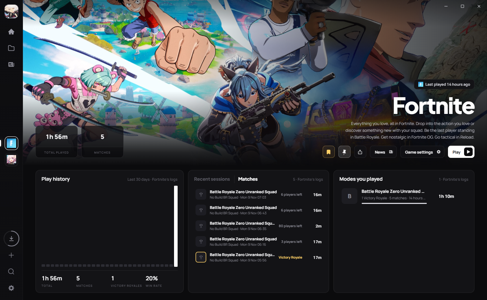
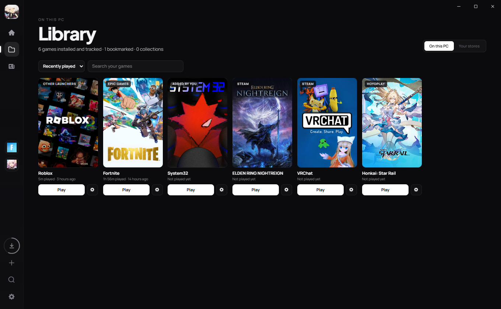
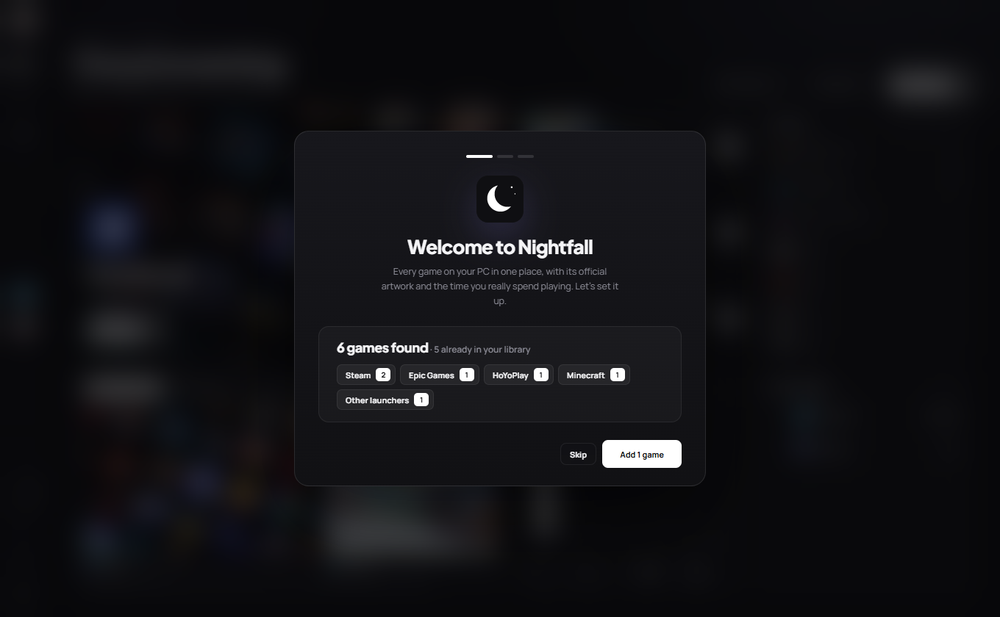

Nightfall finds the games on your PC, gives them their official artwork and tracks how long you really play. Fast, beautiful and completely private.

No accounts to connect and nothing to configure. Open Nightfall and your games are already there.
Steam, Epic, GOG, Ubisoft, Riot, HoYoPlay, EA, Rockstar, Xbox, Minecraft, Amazon and itch.io, found automatically.
Counted from the running game, even when you start it from Steam or a desktop shortcut.
Fortnite Victory Royales, Valorant maps and agents, Roblox experiences and Minecraft instances.
Banners and version countdowns for HoYoverse games, plus Fortnite, Valorant, League and Steam updates.
Open any game you own, even uninstalled, and watch its cover fill with colour as it installs.
Keyboard shortcuts for everything and full controller support for the couch.


Most launchers want an account. Nightfall doesn't even have one. What you play is your business.
Yes. The source code is public on GitHub.
No. Games still start through their own launchers, so achievements, cloud saves and friends keep working. Nightfall just puts them all in one place.
The installer isn't code-signed yet, so SmartScreen doesn't recognise it. Click More info → Run anyway. The source code is public, and every update is signed and checked by the app before it installs.
No. Nightfall is written in Rust and checks running games every few seconds using almost no CPU or memory. You can keep it in the tray while you play.
Open Settings → Help → Create a report in the app, then open an issue and attach the report from your Downloads folder.